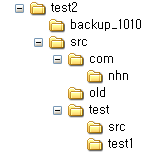

본 도구는 NHN 내부의 소스 코드를 정량적으로 측정하기 위한 메트릭 분석 툴입니다.
Freeware 코드 분석도구인 CodeAnalyzerPro를 내부적으로 호출하고, 그 결과를 정제하여 NHN의 메트릭셋인
NSIQ에 적합한 정보를 추출합니다.
(http://www.geocities.com/sivaram_subr/codeanalyzer/description.htm)
본 도구가 제공하는 기능은 다음과 같습니다.
본 도구를 사용하여 소스 코드로부터 추출 가능한 정보는 다음과 같습니다.
Usage : nsiqcollector [-c complexityresultfile] [-l lOCresultfile] [-f filefilterlcoation] [-d] [-i] [-g] [--html|--csv]
[--force-lang=LANGUAGENAME:EXTENSION,[LANGUAGENAME:EXTENSION]]
targetdirectory ..
[Example]
nsiqcollector .
nsiqcollector -g .
nsiqcollector --html target
nsiqcollector -c comResult.html -l locResult.html --html target target2
nsiqcollector --force-lang=JSP/PHP:xml target
[Options]
-c Assign complexity anlysis result file location (optional when 1 target is provided)
-l Assign loc analysis result file location. (optional when 1 target is provided)
--html Output HTML format (default)
--csv Output HTML format (if not provided, the default output type(html) is used)
-g Generate the baseFileList.txt file. This file contains the current source file name and size,
so that it can be used to get the file information which is modified.
-i CI(Continuous integration) mode. it excludes '\\target\' directory,
doesn't make filefilter.txt even when it's not available,
and print analysis starting and end time.
-f filefilter location
-d Leave the temporary files for debugging purpose.
-v Show detail ouput(verbose mode)
--force-lang=LANGUAGENAME:EXTENSION,[LANGUAGENAME:EXTENSION]...
Add file extensions to be counted as assigned languages.
-s Assign Filter scope name to be applied in this analysis
-m MODULENAME Assign Ouput Module to enable custom ouput
* nsiqcollector analyzes LOC and complexity of java, c/c++, jsp, php, html and javascript files
* Please make sure you have writable permission on the target and tool excutable directories
* In default, the loc analysis file("loc_result.csv") will be output in the target directory
and the complexity analysis file("complexity_result.csv") will be output in the target directory.
You can change this with assign -c filename -l filename options
If you want to provide the more than 1 target directories to be analyzed, you should provide
-c -l options to specify the output file.
* If you want to leave the temporary file for a debugging issue, please use -d option.
* If you want to only check the modified or new sources. Please use -g option to
generates the file list file (baseFileList.txt) based on source file names and sizes in the current target directory.
When you run N'SIQ Collector next time, it automatically finds the baseFileList.txt file in the target directory.
And if there is, it loads the base file list and compare the file size and file name while processing files,
N'SIQ Collector only analyzes the files whose names and sizes are different from base file list.
For relaxation, it only compares file name not path.
* Moreover, if you want to filter in or out some source code files in the target directory
please locate 'filefilter.txt' file in the target directory in the form of
* FILTER_SCOPE_NAME
+ INCLUDE_PATH_PATTERNS
- EXCLUDE_PATH_PATTERNS
= LANGUAGE_NAME:EXTENSION,LANGUAGE_NAME:EXTENSION
The filter scope name is the identifier to selectively apply filter.
In case of the quality, Maybe only main sources except test should be measured.
Otherwise, to measure the productivity, the test code might be measured as well.
To keep this information in the same file(filefilter.txt), you can provide the
* file_scope_name before the filter configuration starts.
You can define multiple filter scope name in the filefilter.txt. In addition,
you can run nsiqcollector with -s option to specify the filter scope name used.
We recommend you to define at least two filter scopes (Productivity, Quality)
The included(+)/excluded(-) paths are applied sequentially from up to down
In default, all files under target directory but under /.cvs/ and /.svn/
will be included for analysis.
If you want to count lines of code file with special extension,
You can add the extension and language mappings in the filefilter.txt as well.
The "=" indicates the this line is for the language/extension mappings,
and you can add the multiple mappings separating with ",".
Currently, For the LANGUAGE_NAME, HTML, Java, C/C++, Javascript are JSP/PHP are supported.
Ex) = JSP/PHP:ftl,JSP/PHP:res
Be careful, it's case sensitive.
* This is based on CodeAnalyzerPro written by Sivaram
(http://www.geocities.com/sivaram_subr/codeanalyzer/description.htm)
|
============================ Analyzing nsiqcollector =============================== Alert!! The file filter "D:\Project\personal\nsiqcollector\filefilter.txt" does not exist. The new file filter is generatred in D:\Project\personal\nsiqcollector\filefilter.txt Please modify it if you want to add file filters. + included_path_patterns - excluded_path_patterns The included/excluded paths are applied sequentially from up to down In default, all files under "." will be included and the files which contains ".svn", ".cvs" in their path are excluded If you want to count lines of code in files with special extension. You can add the extension and language mapping in the file filter using following. = LANGUAGENAME:EXTENSION,LANGUAGENAME:EXTENSION The "=" indicates the this line is for the language/extension mappings, and you can add the multiple mappings using ",". Currently, For the LANGUAGENAME, HTML, C/C++, Javascript are JSP/PHP are supported. Be careful, it's case sensitive. Filter Scope "default" is applied. Current Filter Setting (Following is applied sequentially) \.cvs\ is excluded \.svn\ is excluded Current File extension and Language Settings JavaScript/ActionScript=js,as, Java=java, C/C++=cpp,cxx,c,hxx,hpp,h, Html=html,htm, JSP/PHP=NHN,nhn,jsp,php,tpl, ============================= Summary Report ============================== ** Total File Count : 85 ** Total LOC : 10642 ** Total Code LOC : 7302 ** Total Function Count : 445 ** Over 10 Complexity Function Rate: 14 (0.03%) ** Over 30 Complexity Function Rate: 3 (0.01%) Lang JavaScript... Java C/C++ Html JSP/PHP Loc 611 5886 500 3471 174 Code Loc 343 4470 381 1955 153 Loc analysis report is saved in .\loc_result.html Complexity analysis report is saved in .\complexity_result.html |
| 구분 | 옵션 | 설명 |
| 도움말 | -h | 도움말 |
| 출력 리포트 위치 지정 | -l LOC분석결과파일패스 | LOC분석결과를 출력할 파일 패스입니다. 지정하지 않으면 분석대상디렉토리내에 loc_result.csv 파일로 설정합니다. |
| -c 복잡도분석결과파일패스 | 복잡도 분석결과를 출력할 파일 패스입니다. 지정하지 않으면 분석대상디렉토리내에 complexity_result.csv 파일로 설정합니다. | |
| 출력 리포트 타입 지정 | --csv | 분석결과를 CSV 형태로 출력합니다 |
| --excel | 분석결과를 Excel 형태로 출력합니다 | |
| --xml | 분석결과를 XML 형태로 출력합니다 | |
| 파일필터링 | -g | 변경 / 수정된 파일만을 측정하기 위해 현재 파일 리스트를 basefilelist.txt 파일로 생성합니다. |
| -f 필터파일패스 | 필터파일(filefilter.txt)이 분석폴더 외에 다른곳에 있을 경우 지정합니다. | |
| -s 필터스코프명 | 필터파일(filefilter.txt)에 들어 있는 필터중 어떤 필터 스코프를 사용하여 분석할 것인지 지정 - 해당 필터 스코프가 filefilter.txt에 존재하지 않을 시 default 필터 사용함 |
|
| --force-lang=언어명:확장자,언어명:확장자 | 강
제로 지정된 확장자를 지정한 언어로 인식하여 분석합니다. 예) JSP/PHP:fpl,JSP/PHP:xml - 사용 가능한 언어부분에 사용가능한 스트링은 다음과 같습니다. C/C++, Java, Javascript/Actionscript,Java, HTML |
|
| 실행제어 | -i | CI 서버에 최적화된 모드입니다. 파일 필터가 없더라도 신규로 생성하지 않으며, /target/ 폴더를 자동으로 exclude 합니다. 또한 로그로 분석 시작시간과 종료시간을 출력합니다. |
| -v | 분석 과정에 대한 상세 메시지를 출력합니다. |
| filefilter.txt | 디렉토리구조 |
|
# Please modify following - \.cvs\ |
 |
| 언 어 | 확 장자 |
| C / C++ | cpp, cxx, c, h, hxx, hpp |
| Java | java |
| Javascript/ActionScript | js, as |
| JSP/PHP | jsp, php, tpl, nhn |
| HTML | html, htm |